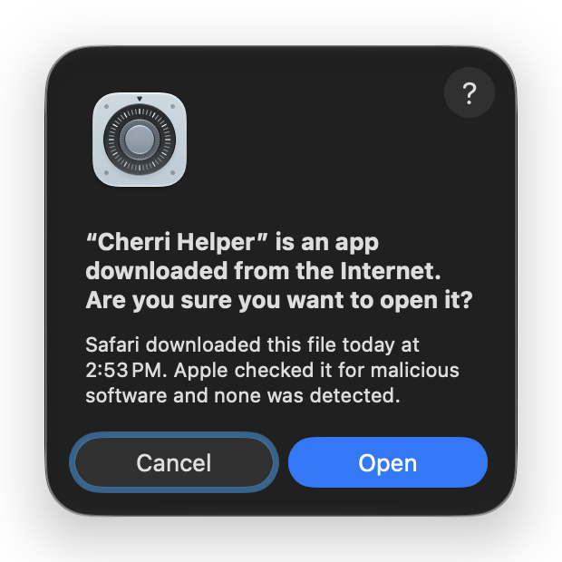

Cherri Helper for Mac
Sign the shortcuts you export from Cherri Shortcuts on your own Mac, instead of through the developer's server.
For Macs with macOS 13 or later, Apple silicon or Intel. Signed and notarized by Apple.
What it does
iOS only imports signed shortcuts. Cherri Helper is a small app that lives in your Mac's menu bar. When you tap Export in Cherri Shortcuts, your iPhone sends the compiled shortcut to your Mac over your home network, your Mac signs it with the tool built into macOS, and the signed shortcut goes straight back to your iPhone.
What you need
- A Mac signed in to iCloud. Signing a shortcut needs it.
- Your iPhone and your Mac on the same Wi-Fi network.
- The Mac awake and Cherri Helper running when you export.
Install it
- Download and open the file. Open the downloaded Cherri-Helper.dmg. A window appears with the Cherri Helper icon and an Applications folder.
- Drag Cherri Helper onto Applications. This copies it to your Mac. You can eject the disk image afterward.
- Open Cherri Helper from your Applications folder. The first time, see the next section.
The first time you open it
macOS shows a message saying Cherri Helper is an app downloaded from the Internet and asks whether you want to open it. That is normal for any app that doesn't come from the Mac App Store. Cherri Helper is signed with the developer's Apple Developer ID and checked by Apple's notarization service, so the message should also say Apple checked it for malicious software and found none. Click Open. macOS asks only once.

If your Mac's firewall is on, it may also ask whether Cherri Helper can accept incoming network connections. Click Allow. It needs this to hear from your iPhone.
If macOS instead says it can't check the app for malicious software, the download may not have finished or may have been changed. Delete it and download it again.
Pair your iPhone
Cherri Helper opens a window with a QR code the first time you launch it. If you closed it, click the cherry in your menu bar and choose Pair an iPhone.
- In Cherri Shortcuts, open Settings, then Signing, and choose My Mac.
- Tap Scan QR Code and point your iPhone at the code on your Mac.
- Allow camera and local network access when iOS asks.
- Tap Test Connection. It should say it's connected.
After that, Export signs on your Mac.
Keeping it running
Cherri Helper has to be running for your iPhone to sign. It lives in the menu bar and uses very little. In its Settings you can turn on Start Cherri Helper when I log in. If you quit it, open it again from Applications.
Updates
Cherri Helper checks for updates once a day and tells you when one is ready. You can also check any time in Settings. Updates are signed, so only releases from the developer can install.
Privacy
Your shortcut travels from your iPhone to your Mac over an encrypted connection on your own network. It does not go to the developer. Your Mac signs it with the signing tool built into macOS, which may contact Apple's servers, and Apple's own policies govern that. Cherri Helper keeps the shortcut only for the few seconds signing takes. Its log records times, file sizes and results, never your shortcuts. Please don't put passwords or other secrets in code you export.
The full privacy policy covers Cherri Shortcuts itself.
Something wrong?
The help page covers setup and the usual snags. In Cherri Helper's Settings, open the Support tab and choose Report a Problem. It prepares an email with your Mac's basic details and the helper's log, and you can read it before you send it. Or write to dastefster@gmail.com.